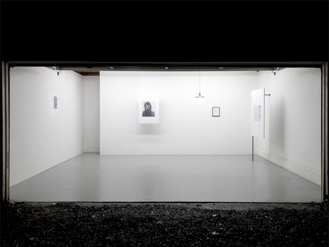
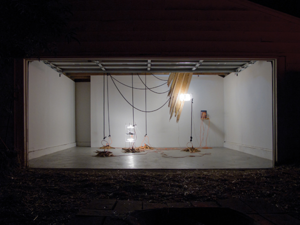

Travis, Josh and Dan all ran independent spaces before American Medium...




Travis, Josh and Dan all ran independent spaces before American Medium...
From 2008-2013, Travis and Josh (of American Medium) with Zack Davis ran Appendix Space in Portland, OR.
They hosted shows with Olivia Erlanger, Bunny Rogers, Katja Novitskova, Andrew Norman Wilson, Tabor Robak, Body by Body...
From 2009-2012, Daniel Wallace ran Extra Extra in Philadelphia.
They hosted shows with Colin Self, Kristin Smallwood, Brian Khek and Micah Schippa, Oliver Laric, Aleksandra Domanovic, Constant Dullaart and Artie Vierkant...